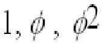

Problema 106.
|
El triángulo de oro. Se llama triángulo de oro a un triángulo isósceles cuyo ángulo desigual mide 36º. Constuye con Cabri dicho triángulo y a partir de él encuentra el valor de los tres primeros términos de la serie de Fibonacci:  , donde el valor del número de oro es 1,61803.. |
Arriero, C. (2003): Comunicación personal.